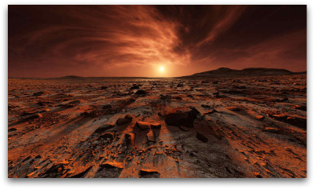
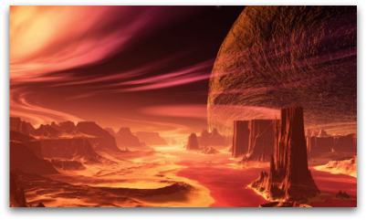

Длительность
пребывания на Марсе
Длительность
перелёта в одну сторону
Стоимость
всего путешествия
Сложность.
Осилит даже ребенок
Четвертая планета от солнца. От Земли Марс отделяет всего лишь 55 млн. км. Иногда Марс называют «красной планетой» из-за красноватого оттенка поверхности, придаваемого ей минералом маггемитом.
 Главная особенность тура на Марс заключается в том, что с ним справится любой человек, даже не имеющий специальной подготовки, ведь климат на Марсе похож на земной, а из-за того, что Марс - наиболее близко расположенная к Земле планета, дорога не будет утомляющей. Отель оснащен всеми удобствами, включая вай-фай.
Шведский стол на
завтрак, обед, ужин
Большое разнообразие
вкусных коктейлей
Бесплатный
круглосуточный wi-fi